الجري وركوب الدراجة من تطبيق صحتي
تمارين الكارديو من أي تطبيق تظهر مع خرائط المسار والسرعة ومناطق النبض.
تمارين القوة على iPhone وApple Watch
سجّل كل مجموعة في ثوانٍ، وتابع كل رقم قياسي، ودع المدرب الذكي يخطط أسبوعك. مع Replex يتحوّل التمرين إلى تقدّم تراه بعينيك.
ابدأ مجانًا. يضيف Pro المدرب الذكي وخططك الخاصة وسجلك الكامل.
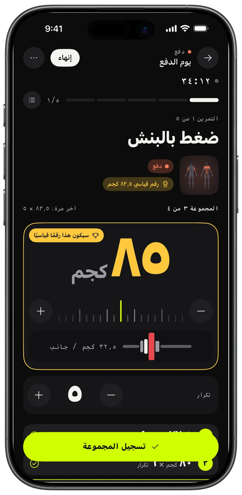
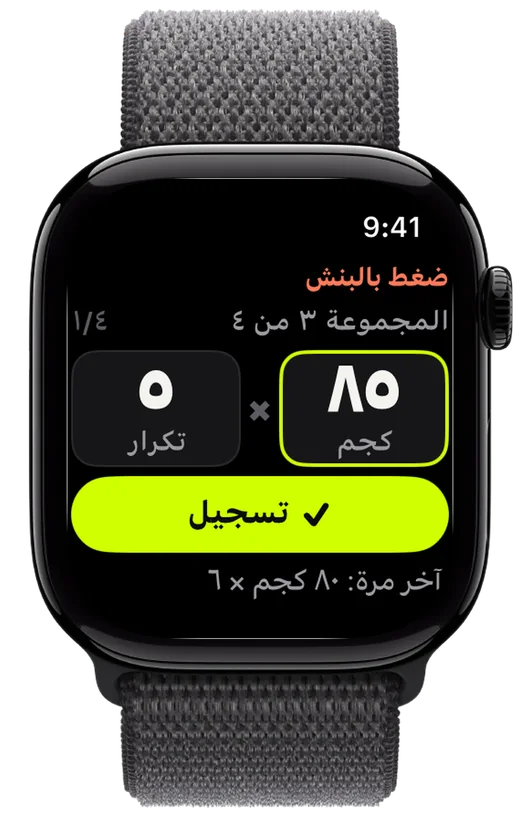
التسجيل
اضبط الأوزان، سجّل المجموعة، وتفوّق على آخر مرة. يتذكّر Replex ما رفعته ويجهّز المجموعة التالية قبل أن تكون مستعدًا.
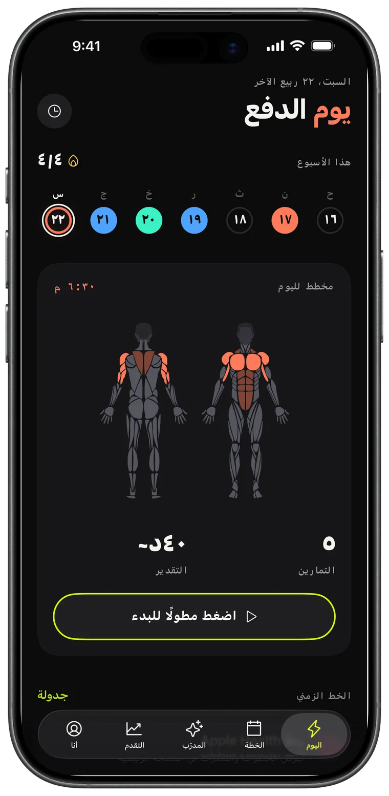
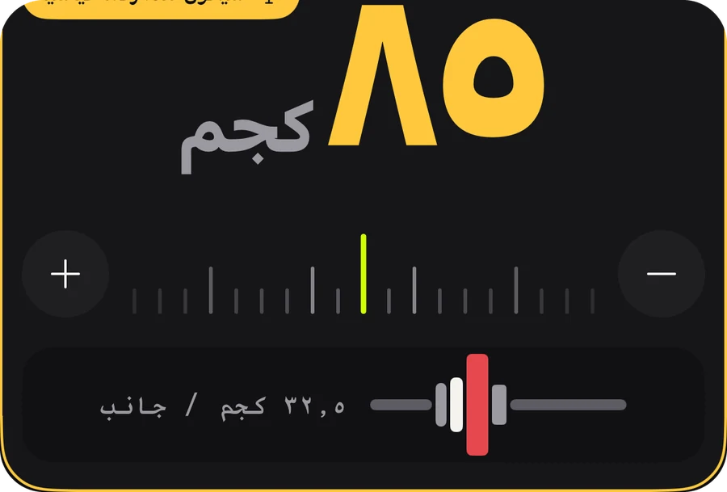
Apple Watch
اترك هاتفك في الحقيبة. أدِر التاج لضبط الوزن والتكرارات، واضغط «تسجيل»، ويبقى iPhone متزامنًا لحظة بلحظة.
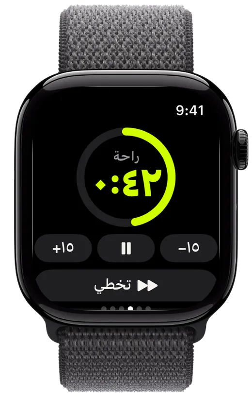
التقدّم
حجم تمرين يرتفع أسبوعًا بعد أسبوع، وكل رقم قياسي تحققه، واتجاه كل تمرين — لتعرف أن جهدك يؤتي ثماره.
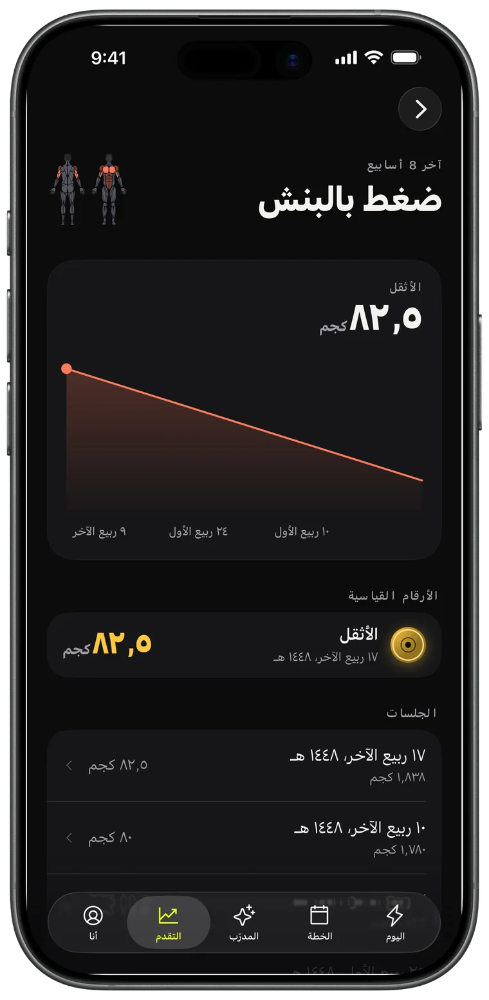
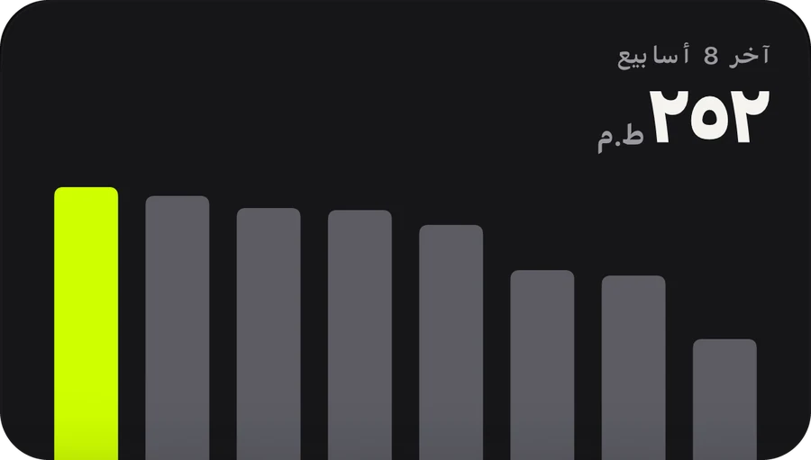
المدرب الذكي · Pro
اطلب أسبوعًا، فيصل إلى تقويمك. يقرأ المدرب تمارينك الحقيقية — الجلسات والأرقام القياسية والجري — ويخطط على أساسها.
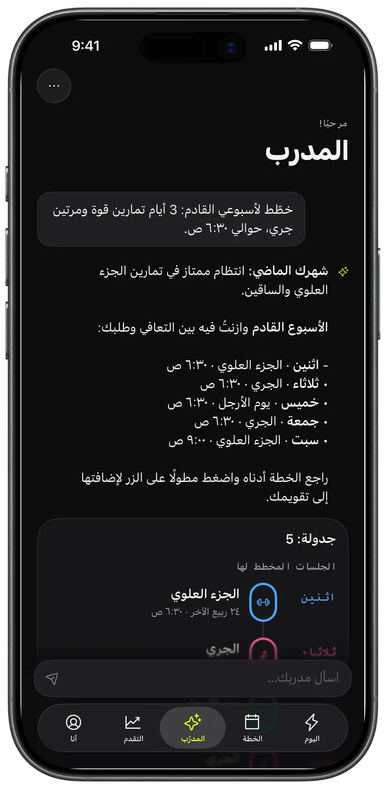
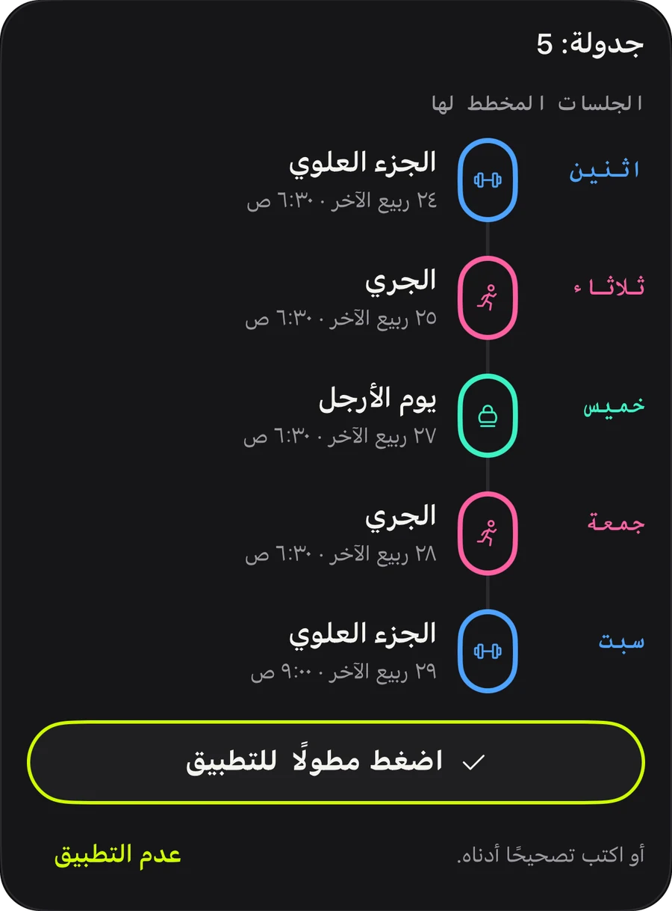
الخطط
دفع، سحب، أرجل، علوي/سفلي، جسم كامل: 44 خطة جاهزة لتبدأ اليوم، أو ابنِ خطتك وكرّرها.
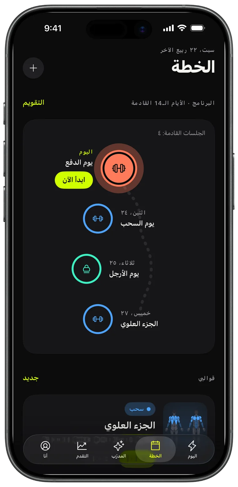
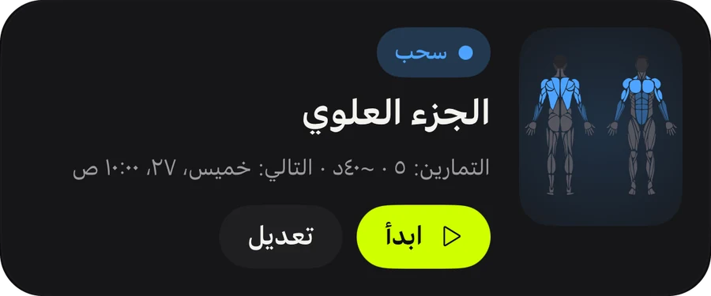
المشاركة
كل تمرين تُنهيه يتحوّل إلى بطاقة قصة بالحجم والوقت والأرقام القياسية. انشرها، أو احتفظ بها دليلًا.
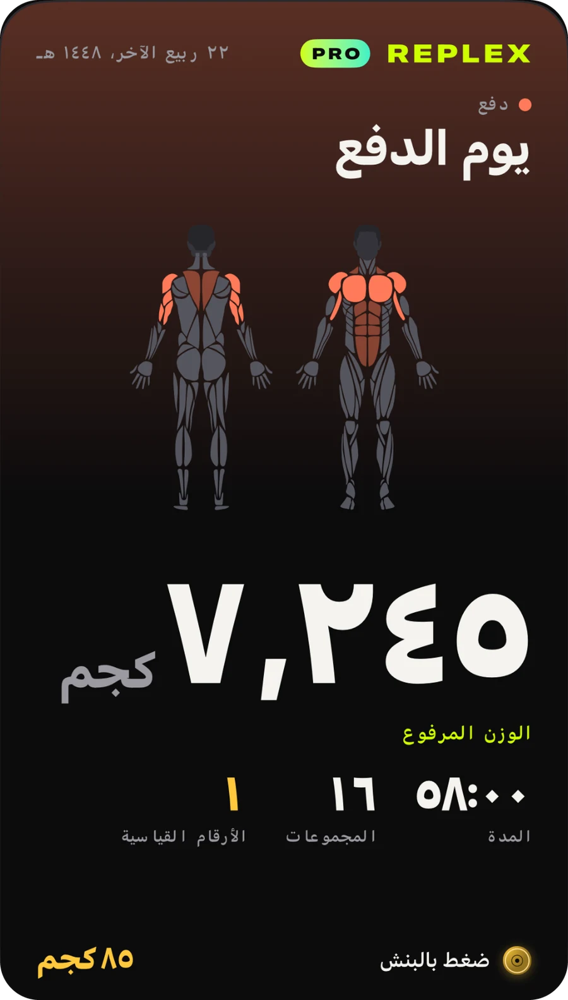
تمارين الكارديو من أي تطبيق تظهر مع خرائط المسار والسرعة ومناطق النبض.
مجموعتك وراحتك ونبضك على شاشة القفل وفي Dynamic Island.
التمارين والقوالب والخطط على جميع أجهزتك، وتبقى خاصة بك.
اعرف ما تدرّبه الجلسة قبل أن تبدأ، وما استهدفته هذا الأسبوع.
الكيلوغرام أو الرطل أو الستون، مع تمارين وزن الجسم والتمارين المؤقتة مدمجة.
فاتح أو داكن، وثلاثة ألوان تمييز: Volt والأزرق والوردي، مع أيقونات تطبيق مطابقة.
كل ما تحتاجه للتسجيل والتقدّم.
لمن يخطط مسبقًا.
يتوفر Pro داخل التطبيق باشتراك شهري أو سنوي أو بشراء لمرة واحدة مدى الحياة. يمكن إلغاء الاشتراكات في أي وقت من حساب Apple.
نزّل Replex وسجّل أول تمرين لك في أقل من دقيقة.
لا. يعمل Replex بالكامل على iPhone. ومع Apple Watch يمكنك تسجيل المجموعات وتشغيل مؤقت الراحة وتتبّع النبض من معصمك.
نعم. يمكنك استخدام Replex مجانًا: التسجيل، ومؤقت الراحة، و5 خطط بوزن الجسم، والأرقام القياسية لجلساتك الأخيرة، و5 تمارين على Apple Watch. ويضيف Replex Pro — شهريًا أو سنويًا أو بشراء لمرة واحدة مدى الحياة — المدرب الذكي، وجميع الخطط الـ 44، وقوالبك الخاصة والجدولة، والسجل الكامل، وتمارين غير محدودة على الساعة.
على أجهزتك وفي حساب iCloud الخاص بك. ويمكن أيضًا حفظ التمارين في تطبيق صحتي. لا يرى المدرب الذكي إلا ما يحتاجه للإجابة، وفقط عندما تسأله.
الكيلوغرام أو الرطل أو الستون، وأداة تحميل الأقراص تتبع الوحدة التي تختارها.
54 لغة، منها العربية والإنجليزية والإسبانية والبرتغالية والفرنسية والألمانية واليابانية والكورية والصينية والعبرية.